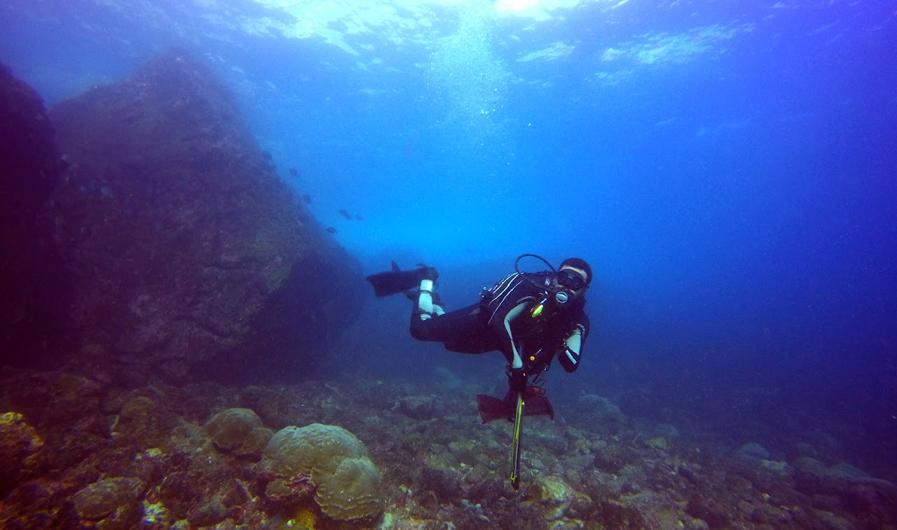

Fieldwork
Hands-on Work
Why are some fish groups incredibly diverse while others barely change over millions of years? These questions drive my research. Over the past decade, I’ve explored ecosystems like the Amazon basin, Caribbean reefs, and African Rift Lakes to understand what shapes biodiversity on both ecological and evolutionary levels.
-
Lake Tanganyika
(African Rift Lake System) -
Darwin & Wolf, Genovesa, Isabella, & Santa Cruz 2017
(Galápagos Northern Islands)Ricardo Betancur, Carmen Pedraza, Omar Dominguez, Francisco Martinez, Yareli Lopez, & Eduardo Espinoza. Photos by Ricardo Betancur & Francisco Martinez.
 -
Cabo Corrientes 2017
(Colombian Pacific Coast)Ricardo Betancur, Dahiana Arcila, Carmen Pedraza, Guillermo Ortí, & Omar Dominguez lab. Photos by Ricardo Betancur.
-
Ixtapa & Faro de Bucerias 2016
(Mexican Pacific Coast)Ricardo Betancur, Dahiana Arcila, Carmen Pedraza, Rafael A. Rivero-Vega, & Omar Dominguez lab. Photos by Ricardo Betancur.
-
Aguadilla & La Parguera 2015 - 2016
(Puerto Rican West Coast)Ricardo Betancur, Dahiana Arcila, Carmen Pedraza, Rafael A. Rivero-Vega, Arturo Acero, & Guillermo Ortí. Photos by Ricardo Betancur & Prosanta Chakrabarty.
-
Rio Nhamundá 2013
(Brazilian northern tributary of the Amazon River)Rupert A. Collins & Valeria Nogueira. Photos by Emanuell Duarte-Ribeiro & Rupert A. Collins.
-
Rio Tapajós 2013
(Brazilian southern tributary of the Amazon River)Rupert A. Collins & Valeria Nogueira. Photos by Emanuell Duarte-Ribeiro & Rupert A. Collins.
-
Rio Xingu 2012
(Brazilian southern tributary of the Amazon River)Leandro Souza. Photos by Emanuell Duarte-Ribeiro.
-
Arquipélago de São Pedro e São Paulo 2008
(ASPSP, Brazilian Mid-Atlantic Ridge Archipelago)Rodrigo Xavier. Photos by Rodrigo Xavier.